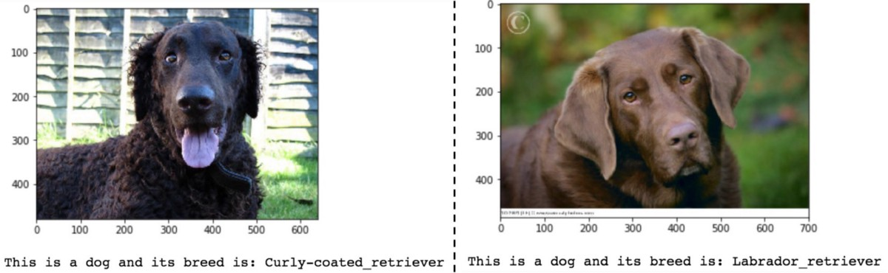

<section id="home" data-background="bg.jpg">
	<h2 class="head mb" style="text-align: center;"><b><span class="mark">Visión artificial &<br>Aprendizaje automático</span></b></h2>
	<p class="mb"><span class="mark">Clasificación de imagenes y detección de objetos</span></p>
	<p>Milton Olaf Paredes</p>
</section>
<section id="ai" data-background="#041321">
	<h3 class="head">Inteligencia artificial</h3>
	<h4 class="comment"># Disciplina científica</h4>
	<h4 class="comment"># Funciones cognitivas de mentes humanas</h4>
	<h4 class="comment"># Aprender y resolver problemas</h4>
</section>
<section id="machine-learning" data-background="#051829">
	<h3 class="head">Machine Learning</h3>
	<h4 class="comment"># Máquinas que aprenden</h4>
	<h4 class="comment"># Observación y razonamiento</h4>
	<h4 class="comment"># Asimilación de conocimiento</h4>
	<h4 class="comment"># Deep learning</h4>
	<h4 class="comment"># redes neuronales artificiales</h4>
</section>
<section id="objective" data-background="#072636">
	<h2 class="head">Objetivo de la Investigación</h2>
	<h4 class="comment"># Antecedentes modernos</h4>
	<h4 class="comment"># Modelos de aprendizaje automático</h4>
	<h4 class="comment"># Experimentación</h4>
</section>
<section id="classification" data-background="#0B3E4B">
	<h3 class="head">Clasificación de imagenes</h3>
	
</section>
<section id="object-detection" data-background="#0F5B5F">
	<h3 class="head">Detección de objetos</h3>
	
</section>
<section id="end" data-background="#151019">
	<h2 class="head">Comentarios</h2>
</section>
